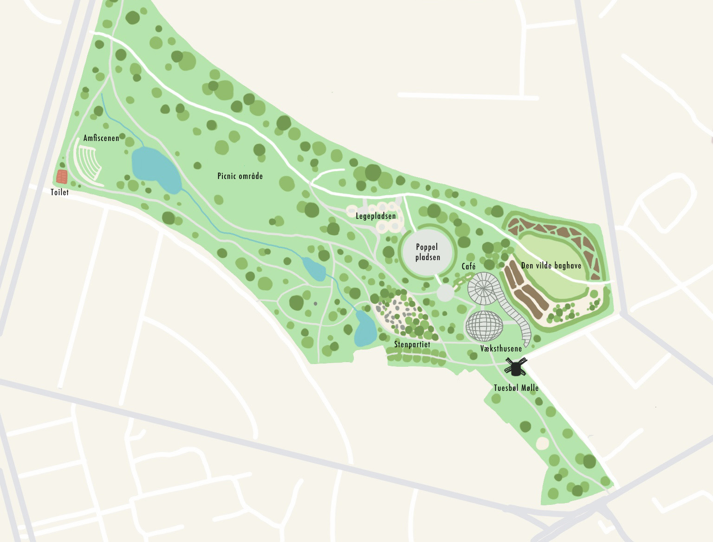
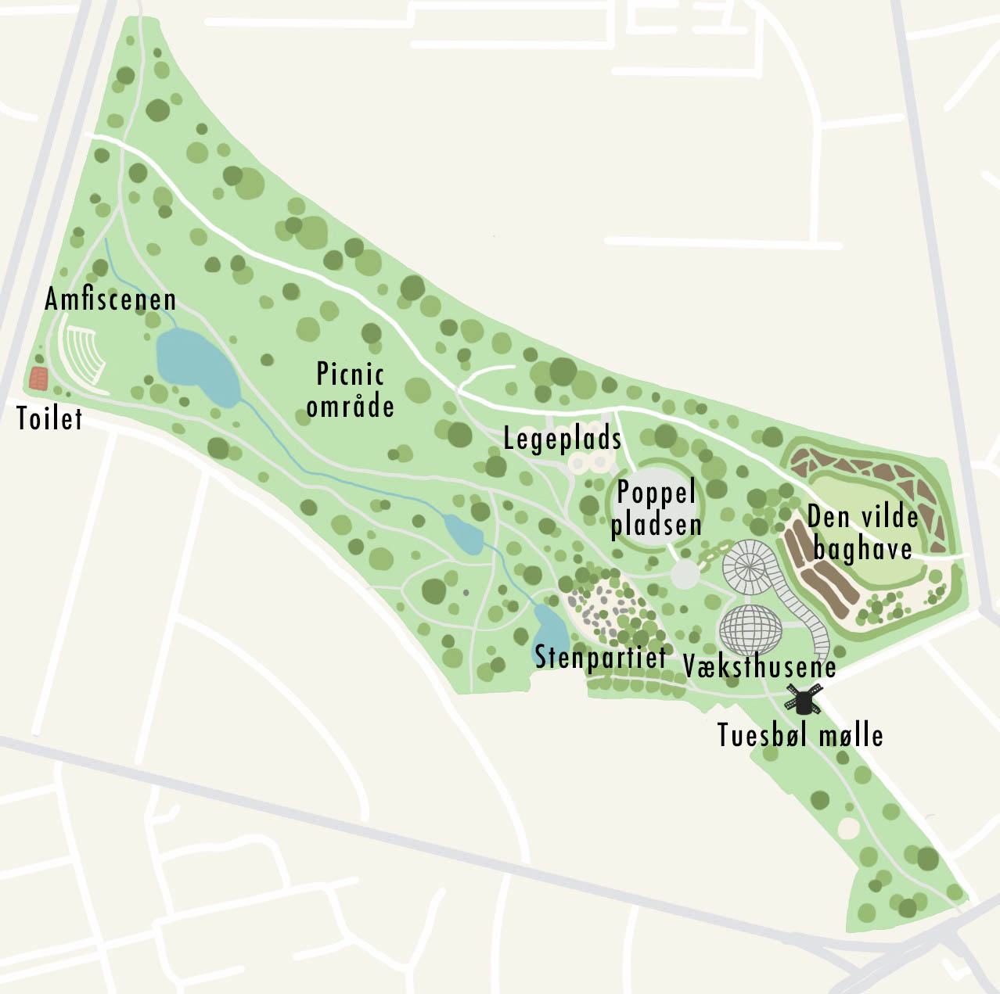

Oversigtskort
Botanisk Have
På oversigtskortet kan du få et overordnet overblik over de forskellige lokationer og seværdigheder i Botanisk Have. Derudover er større stier beregnet til kørende biler markeret med hvid, mens de mindre stier i parken er markeret med lysegrå. Du kan læse mere om hver enkelt lokalitet i hovedmenuen under oplevelser.
Oversigtskort
På oversigtskortet kan du få et overordnet overblik over de forskellige lokationer og seværdigheder i Botanisk Have. Derudover er større stier beregnet til kørende biler markeret med hvid, mens de mindre stier i parken er markeret med lysegrå. Du kan læse mere om hver enkelt lokalitet i hovedmenuen under oplevelser.